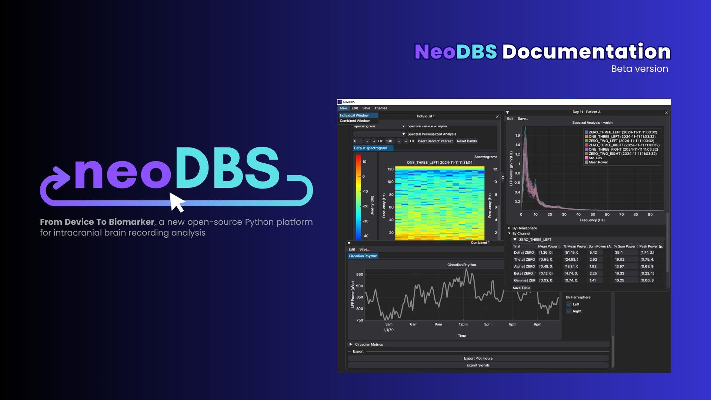
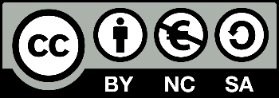

About NeoDBS¶

NeoDBS is an open-source user-oriented platform developed in Python, designed to examine electrophysiological brain activity data offline from recordings acquired with Medtronic's Percept BrainSense™ Technology, present in deep brain stimulation (DBS) equipments. The final goal of NeoDBS is to accelerate and facilitate the biomarker research in intracranial recordings, acquired by DBS systems.
This new platform was developed in order to facilitate the analysis of multiple independent recordings, by experienced or non-experienced users like health physicians. It offers:
Browser-like design, allowing multiple workspaces open simultaneously;
Workspaces focused on a single recording session or on multiple recording sessions;
Analysis pipelines with default or customizable parameters;
Event-locked analysis and event marking;
Exportation of tables, signals and images;
Several filtering and spectral analysis methods for recorded local field potentials (LFP);
Interface and data customization;
NeoDBS includes several open-source organized modules focused in data preparation (Data Handling), data processing - including filtering, segmentation, and method application - (Preprocessing) and feature extraction (Features). A collection of utility tools was also developed (Utils). All modules and functions are described in Modules.
Quick Start¶
If you're ready to start using NeoDBS, follow the general workflow described in First Usage. If you haven't installed NeoDBS, follow the instructions in First Steps.
Tutorials¶
Several tutorials have been prepared to facilitate the use of NeoDBS. Tutorials are recommended to grasp the workflow and functionalities available in NeoDBS, however they do not explain in complete detail all possible pipelines.
Tip
Start with First Usage to understand how NeoDBS works.
Modules (Functions)¶
Full documentation of all function's and modules.
Collaborators¶
NeoDBS was developed by the Neurophysiology and Neuroenginnering Laboratory (Porto, Portugal). For any code requests ou doubts, contact Larissa Rodrigues.
Citing this Work¶
If you used NeoDBS for your work, please cite our work (preprint): Larissa Rodrigues, Andreia Ferreira, Ines Pereira, Ricardo Moreira, Luis Jacinto (2026). NeoDBS: Open-Source Platform for Visualization and Analysis of Electrophysiological Recordings from Deep Brain Stimulation Systems. bioRxiv, 2026.03.27.714691. doi: https://doi.org/10.64898/2026.03.27.714691
License¶
This work is licensed under a Creative Commons Attribution-NonCommercial-ShareAlike 4.0 International License.
